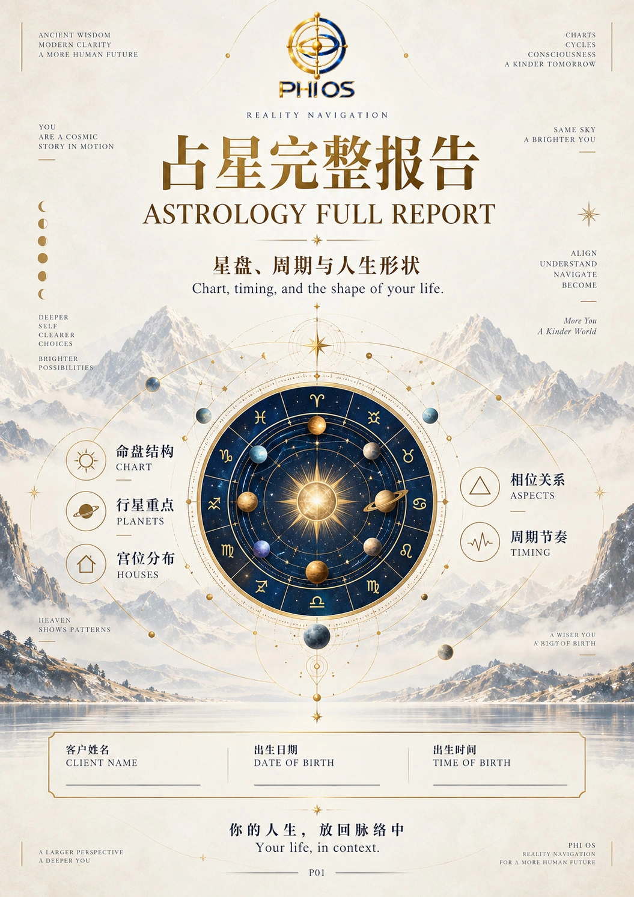
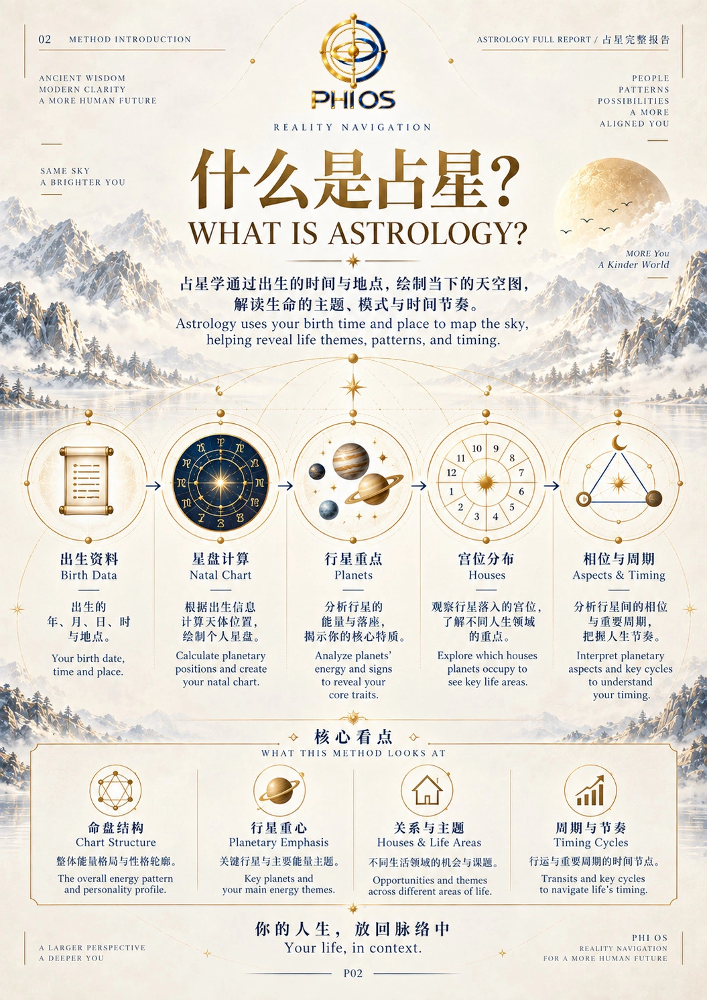
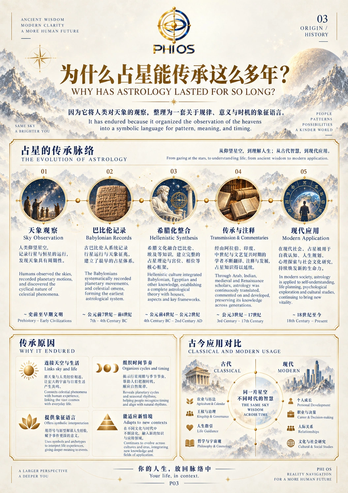
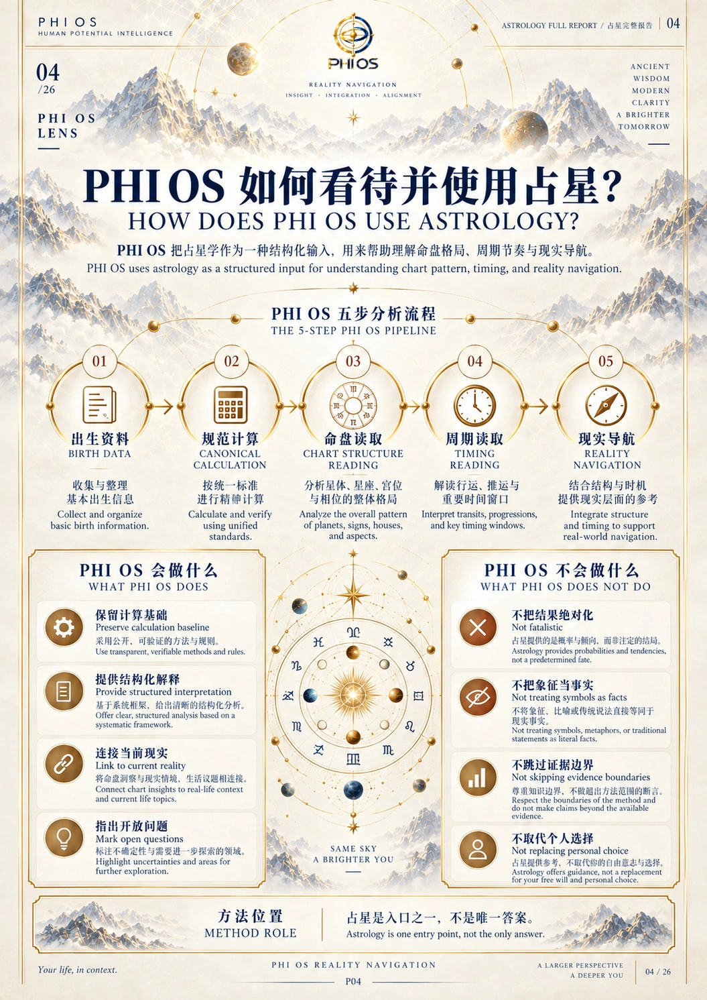
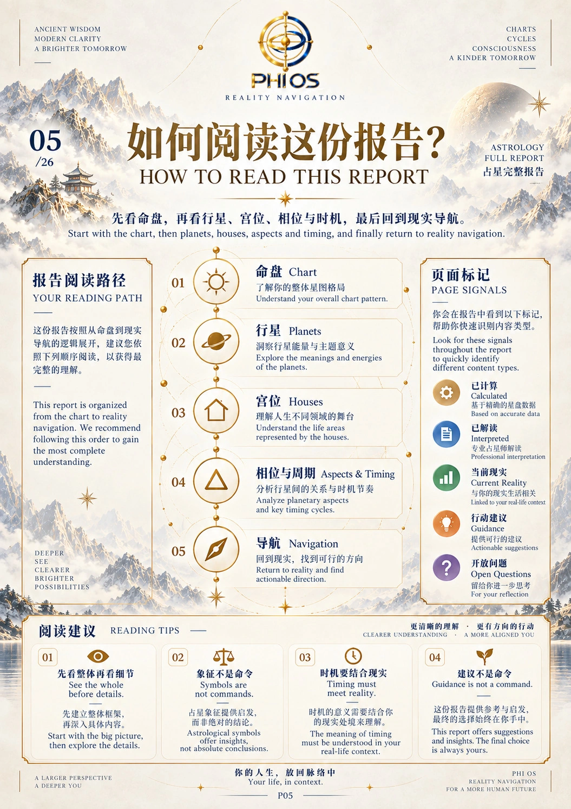

Canonical bilingual P01–P05
HUMAN_ACCEPTED · provider calls/cost 0

P01_COVER · v1 · bilingual
0fb3bcbcad823ec0efa505ab9b349eb3da89b4300f8a4ca511166bd4109a1b5f
P02_METHOD_INTRO · R2 · bilingual
36723d30bad2bbe02f3fd4d04724491286cfcaf4a7c06f9cd89acace251b138a
P03_ORIGIN · R2 · bilingual
be8e08f4e715a1d0ebf138834c46c508a06562ad0deee3feff835434082fe794
P04_PHIOS_LENS · R2 · bilingual
cb7297f17e490137b9e488d5b9ce461de19b7a06e2099bcfba94b3314574f789
P05_HOW_TO_READ · R2 · bilingual
56cc1391c0ac4a639e5a8aa6cf0e3e77efe562104075dd1414f6f8286d37dcb0